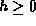
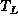
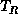

Data Structures and Algorithms
with Object-Oriented Design Patterns in Java
Data Structures and Algorithms
with Object-Oriented Design Patterns in JavaThe search method described above applies directly to binary search trees. As above, the search begins at the root node of the tree. If the object of the search, x, matches the root r, the search terminates successfully. If it does not, then if x is less than r, the left subtree is searched; otherwise x must be greater than r, in which case the right subtree is searched.
Figure  shows two binary search trees.
The tree
shows two binary search trees.
The tree  is an example of a particularly bad search tree
because it is not really very tree-like at all.
In fact, it is topologically isomorphic with a linear, linked list.
In the worst case, a tree which contains n items has height O(n).
Therefore, in the worst case an unsuccessful search must visit O(n)
internal nodes.
is an example of a particularly bad search tree
because it is not really very tree-like at all.
In fact, it is topologically isomorphic with a linear, linked list.
In the worst case, a tree which contains n items has height O(n).
Therefore, in the worst case an unsuccessful search must visit O(n)
internal nodes.
Figure: Examples of search trees.
On the other hand,
tree  in Figure
is an example of a particularly good binary search tree.
This tree is an instance of
a perfect binary tree .
in Figure
is an example of a particularly good binary search tree.
This tree is an instance of
a perfect binary tree .
Definition (Perfect Binary Tree) A perfect binary tree of height  is a binary treewith the following properties:
- If h=0, then
and
.
- Otherwise, h>0, in which case both  and  are both perfect binary trees of height h-1.
It is fairly easy to show that a perfect binary tree of height h
has exactly  internal nodes.
Conversely, the height of a perfect binary tree with n internal nodes
is .
If we have a search tree that has the shape of a perfect binary tree,
then every unsuccessful search visits exactly h+1 internal nodes,
where .
Thus, the worst case for unsuccessful search in a perfect tree is
internal nodes.
Conversely, the height of a perfect binary tree with n internal nodes
is .
If we have a search tree that has the shape of a perfect binary tree,
then every unsuccessful search visits exactly h+1 internal nodes,
where .
Thus, the worst case for unsuccessful search in a perfect tree is  .
.
 Copyright © 1998 by Bruno R. Preiss, P.Eng. All rights reserved.
Copyright © 1998 by Bruno R. Preiss, P.Eng. All rights reserved.